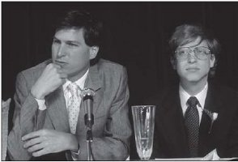

Gates ve Jobs
Yörüngeler Kesişince

Jobs’la Gates, 1985
Macintosh Ortaklığı
Astronomide, iki yıldızın yörüngesi çekimsel etkileşimleri sebebiyle iç içe geçince bir ikili sistem oluşur. Tarihte de bir dönemin birbirinin yörüngesinde dönen iki süperstarın ilişkisi ve rekabetiyle biçimlendiği olmuştur benzer şekilde: 20. yüzyıl fiziğinde Albert Einstein’la Niels Bohr veya Amerikan devletinin ilk yıllarında Thomas Jefferson’la Alexander Hamilton buna örnektir. 1970’lerin sonlarında başlayan kişisel bilgisayar döneminin ilk otuz yılının belirleyici ikili yıldız sistemiyse, ikisi de 1955 doğumlu ve üniversiteden terk olan iki enerjik adamdan oluşuyordu.
Bill Gates’le Steve Jobs, teknolojiyle ticaretin kesişim noktasında benzer emellere sahip olmalarına karşın biraz farklı geçmişlere ve oldukça farklı kişiliklere sahiptiler. Gates’in babası tanınmış bir Seattle’lı avukattı, annesiyse çeşitli saygın kuruluşların yönetim kurullarında yer alan bir sivil hareket lideriydi. Gates bölgenin en iyi özel okulu olan Lakeside Lisesi’nde teknolojiye merak sarmıştı; ama asla bir asi, hippi, ruhsal arayışçı ya da karşıkültür üyesi olmamıştı. Gates telefon şirketini soymak için bir Mavi Kutu yapmak yerine okuldaki öğrencilerin ders saatlerini ayarlayan bir program yazmıştı ve bu sayede istediği kızlarla aynı derslere girebilmişti, ayrıca yerel trafik mühendisleri için bir araba sayım programı yazmıştı. Harvard’da okumuştu ve okulu bırakmaya karar vermesinin sebebi bir Hint guru sayesinde aydınlanmak değil, bir bilgisayar yazılım şirketi kurmaktı.
Jobs’ın tersine Gates bilgisayar kodlamasından anlıyordu; zihni daha pragmatik ve disiplinliydi ve analitik değerlendirme yetisi yüksekti. Jobs ise daha sezgisel ve romantikti ve teknolojiyi kullanılır kılmakta, muhteşem tasarımlar ve kullanıcı dostu arayüzler konusunda sezgileri daha güçlüydü. Mükemmeliyetçiydi, dolayısıyla son derece talepkârdı; insanları karizmasıyla ve güçlü kişiliğiyle idare ediyordu. Gates daha yöntemliydi; ürün değerlendirme toplantılarına gecikmiyordu ve meselelerin özüne ustaca iniyordu. İkisi de kaba olabiliyorlardı, ama Gates’in –kariyerinin başlarında teknolojiye neredeyse Asperger sendromlu denebilecek kadar düşkündü tipik bir şekilde– tavırları genellikle daha az kişisel oluyordu ve duyarsızlıktan çok zihinsel farkındalıktan kaynaklanıyordu. Jobs insanlara yakıcı, incitici gözlerle bakıyordu; Gates ise bazen göz teması kurmakta zorlanıyordu, ama temelde insancıldı.
“İkisi de diğerinden zeki olduğunu düşünüyordu, ama Steve genel olarak Bill’e özellikle zevk ve tarz konusunda kendisinden biraz aşağıymış gibi davranıyordu” diyor Andy Hertzfeld. “Bill de Steve’e tepeden bakıyordu, çünkü Steve program yazamıyordu.” İlişkilerinin başından itibaren Gates, Jobs’ın insanları büyüleme yeteneğini etkileyici bulmuş ve biraz kıskanmıştı. Ama bir yandan da onu “temelde tuhaf” ve “insan olarak garip bir şekilde kusurlu” buluyordu; Jobs’ın kabalığından ve “insanları ya aşağılama ya da kandırma modunda” olmasından hoşlanmıyordu. Jobs da Gates’i sinir bozucu bir şekilde dar kafalı buluyordu. “Gençliğinde LSD kullanmış veya bir aşrama gitmiş olsa zihni açılırdı,” dedi bir keresinde.
Kişilik ve karakter farklılıkları, dijital çağdaki temel ayrımın zıt taraflarında yer almalarına yol açacaktı. Jobs tavizsiz sanatçı mizacı sergileyen kontrol tutkunu bir mükemmeliyetçiydi; o ve Apple donanımı, yazılımı ve içeriği eksiksiz bir paket halinde sunan bir dijital stratejinin modeli haline geldiler. Gates ise zeki, hesapçı ve pragmatik bir ticaret ve teknoloji analistiydi; Microsoft’un işletim sisteminin ve yazılımlarının lisanlarını çeşitli üreticilere vermeye gönüllüydü.
Otuz yıldan sonra Gates, Jobs’ı gönülsüzce takdir eder hale gelecekti. “Teknolojiden cidden pek anlamıyordu, ama neyin işe yarayacağını sezme yeteneği muhteşemdi,” dedi. Ama Jobs Gates’i överek karşılık vermedi. “Bill temelde hayal gücü kıt biri, ayrıca hiçbir şey icat etmedi ve bence bu yüzden artık teknolojiden çok hayır işleriyle uğraşmayı seviyor,” dedi Jobs. “Başkalarının fikirlerini utanmadan çaldı o kadar.”
Macintosh yeni geliştirilmeye başlandığında Jobs, Gates’i ziyarete gitti. Microsoft Apple II için bazı uygulamalar yazmıştı (aralarında Multiplan adlı bir tablolama programı vardı) ve Jobs, Gates’i ve şirketini Macintosh için de yazılım siparişleri vereceklerini söyleyerek heyecanlandırmak istiyordu. Gates’in Seattle’daki, Washington Gölü manzaralı konferans odasında otururken cezbedici vizyonundan, kullanıcı dostu arayüzlü ve kitlelere yönelik, bir California fabrikasında seri üretimi yapılacak bir bilgisayar üretme hayalinden bahsetti. Hayalindeki fabrikanın silikon öğeleri yutup dışarı tamamlanmış Macintoshlar çıkarması, Microsoft ekibinin projeye “Sand”[14] kod adını takmasına yol açtı. Hatta bunu tersine mühendislikle kısaltma haline getirdiler: Steve’s Amazing New Device.[15]
Gates Altair için bir BASIC versiyonu yazarak Microsoft’u kurmuştu. (Beginner’s All-Purpose Symbolic Instruction Code’un[16] kısaltması olan BASIC, teknoloji uzmanı olmayan kişilerin platformlararası yazılım üretmelerini kolaylaştıran bir programlama dilidir.) Jobs Microsoft’un Macintosh için bir BASIC versiyonu yazmasını istiyordu, çünkü Wozniak –Jobs’ın tüm ısrarlarına karşın– kendi Apple II BASIC versiyonunu kayan nokta numaralarını kullanabilecek şekilde geliştirmemişti hiç. Jobs Microsoft’un Macintosh için uygulama yazılımları –örneğin kelime işleme, çizelge ve tablolama programları– yazmasını da istiyordu. Gates Excel adlı yeni bir tablolama programının grafik versiyonlarını, Word adlı bir kelime işleme programını ve BASIC’i hazırlamayı kabul etti.
Jobs o sıralar kraldı, Gates ise sadece saray adamıydı: 1984’te Apple 1,5 milyar dolar ciro yapacaktı, Microsoft ise sadece 100 milyon dolar. Dolayısıyla Gates, Macintosh işletim sistemini incelemek için Cupertino’ya geldi. Yanında Microsoft’tan üç iş arkadaşını getirmişti, ki aralarında Xerox PARC’ta çalışmış Charles Simonyi vardı. Tam kapasiteyle çalışan bir Macintosh prototipi henüz olmadığından, Hertzfeld Macintosh yazılımlarını bir Lisa’da çalıştırıp bir Macintosh prototipinin ekranında sergiledi.
Gates pek etkilenmemişti. “İlk gidişimizde Steve’in bir uygulama gösterdiğini hatırlıyorum; ekranda sekip duran bir şeyler vardı sadece,” diye anımsıyor. “Çalıştırdıkları tek uygulama buydu. MacPaint tamamlanmamıştı.” Gates Jobs’ın tavrından da rahatsız oldu. “Tuhaf bir ziyaretti; Steve aslında size ihtiyacımız yok, burada muhteşem bir şey hazırlıyoruz, şu örtünün altında duruyor diyordu. Pazarlamacı Steve Jobs modundaydı, ama bu tok satıcı moduydu aynı zamanda; ‘Size ihtiyacım yok, ama projeye katılmanıza belki izin veririm,’ diyordu.”
Macintosh korsanları Gates’ten hazzetmediler. “Bill Gates’in iyi bir dinleyici olmadığı belliydi – bir şeyin işleyişinin açıklanmasını dinleyemiyordu – illa o şeyin işleyişi konusunda tahmin yürütmesi gerekiyordu,” diye anımsıyordu Hertzfeld. Ona Macintosh’un imlecinin ekranda titreşmeden hareket edebilmesini gösterdiler. “İmleci çizmek için nasıl bir donanım kullanıyorsunuz?” diye sordu Gates. Bu işlevi sadece yazılımla sağlayabilmelerinden epey gurur duyan Hertzfeld “Onun için kullandığımız özel bir donanım yok!” yanıtını verdi. Gates imlecin o şekilde hareket ettirilmesi için özel donanım gerektiğinde diretti. “Böyle birine ne denir ki?” dedi Macintosh mühendislerinden biri olan Bruce Horn sonradan. “Anladım ki Gates, Macintosh’un zarafetini anlayacak veya takdir edecek biri değildi.”
Bu karşılıklı çekincelere karşın Microsoft’un Macintosh için, kişisel bilgisayar dünyasında çığır açacak grafik yazılımlar üretmesi fikri iki ekibi de heyecanlandırmıştı ve kutlama yapmak için lüks bir restorana gittiler. Microsoft kısa süre sonra bu projeye daha büyük bir ekip ayırdı. “Mac’in üstünde çalıştırdığımız insanların sayısı Steve’inkilerden fazlaydı,” dedi Gates. “Onda 14-15 kişi vardı. Bizde 20 kişi kadar vardı. Cidden canımızı dişimize takmıştık.” Ve Microsoft yazılımcıları azimliydiler, Jobs onların pek zevk sahibi olmadıklarını düşünse de. “Berbat uygulamalarla geldiler,” diye anımsıyordu Jobs, “ama uğraştıkça daha iyisini yaptılar.” Sonunda Jobs Excel’i öyle sevdi ki Gates’le gizli bir anlaşma yaptı: Microsoft Excel’in tüm kullanım haklarını iki yıllığına Macintosh’a verirse ve IBM PC versiyonunu yapmazsa, Jobs Macintosh’a yönelik bir BASIC versiyonu üstünde çalışan ekibini dağıtacaktı ve Microsoft’un BASIC’ini süresiz lisanslı kullanacaktı. Gates akıllılık edip bu anlaşmayı kabul etti; projesi iptal edilen Apple ekibiyse küplere bindi ve Microsoft ilerideki pazarlıklar için bir koz kazandı.
Gates’le Jobs şimdilik bağ kurmuşlardı. O yaz endüstri analisti Ben Rosen’ın Wisconsin’deki Geneva Gölü’nde bulunan bir Playboy Kulübü tatil tesisinde düzenlediği konferansa birlikte gittiler; orada hiç kimsenin Apple’ın geliştirdiği grafik arayüzlerden haberi yoktu. “Herkes IBM PC her şeymiş gibi davranıyordu ve bu hoştu, ama Steve’le ben gülümsüyorduk, çünkü bizde bir şey vardı,” diye anımsıyor Gates. “Ve Steve ağzından kaçırıyordu, ama kimse dikkat etmedi.” Gates Apple’ın tatil gezilerine katılmaya başladı. “Bütün luaulara[17] katıldım,” diyor Gates. “Ekiptendim.”
Gates Cupertino’ya sık sık gitmekten hoşlanıyordu; orada Jobs’ın çalışanlarına sergilediği yanlış tavırları ve saplantılarını izliyordu. “Steve fareli köyün kavalcısı modunun doruğundaydı, Mac’in dünyayı değiştireceğini söylüyordu ve insanları deli gibi çalıştırıyordu, gerilim inanılmazdı ve kişisel ilişkiler karmakarışıktı.” Jobs bazen neşeli başlayıp sonra korkularını Gates’le paylaşıyordu. “Cuma geceleri birlikte akşam yemeği yiyorduk ve Steve her şeyin mükemmelliğinden bahsedip duruyordu. Ertesi günse ‘Bu ürün satar mı acaba, ah Tanrı’m, fiyatı yükseltmeliyim, bunu sana yaptığım için üzgünüm, ekibimdekiler geri zekâlı,’ gibi şeyler söylüyordu istisnasız.”
Xerox Star piyasaya sürülünce Gates Jobs’ın gerçekliği çarpıtma sahasının işleyişine tanık oldu. Jobs bir Cuma gecesi, ekiplerin birlikte çıktığı bir akşam yemeğinde, şimdiye kadar kaç Stars’ın satıldığını sordu. Gates 600 dedi. Ertesi gün Jobs, Gates’in ve bütün ekibin önünde 300 Star satıldığını söyledi, Gates’in herkese 600 tane satıldığını söylediğini unutarak. “Bunun üzerine ekibindeki herkes ‘Ona saçmaladığını söyleyecek misin?’ dercesine bakmaya başladı bana,” diye anımsıyordu Gates. “Ama oltaya gelmedim.” Yine bir gün Jobs’la ekibi Microsoft’u ziyarete gitmişlerdi ve Seattle Tenis Kulübü’nde akşam yemeği yiyorlardı. Jobs Macintosh’un ve yazılımının kullanım kılavuzu gerektirmeyecek kadar basit işleyeceğinden dem vurmaya başladı. “Öyle bir konuşuyordu ki, sanki herhangi bir Mac uygulaması için kullanım kılavuzu gerektiğini düşünen herkes aptalın önde gideniydi,” dedi Gates. “Biz de ‘Ciddi mi acaba, kullanım kılavuzları yazdırdığımızı ona söylesek mi?’ diye düşünüyorduk.”
Bir süre sonra ilişkilerinde sorunlar başgösterdi. Baştaki planları bazı Microsoft uygulamalarının –Excel, Chart ve File gibi– Apple logosunu taşıması ve Macintosh’larla birlikte paket halinde satılmasıydı. Jobs bilgisayarın kutusundan çıkarılır çıkarılmaz kullanıma hazır olmasını sağlayacak uçtan uca sistemlere inanıyordu ve ayrıca Apple’ın MacPaint ve MacWrite yazılımlarını da pakete dahil etmeyi planlıyordu. “Uygulamalar için makine başına 10 dolar alacaktık,” dedi Gates. Ama bu anlaşma rakip yazılım üreticileri, örneğin Lotus’un kurucusu Mitch Kapor’u rahatsız etti. Ayrıca bazı Microsoft programları gecikebilirmiş gibi görünmeye başladı. Bunun üzerine Jobs Microsoft’la yaptığı anlaşmadaki bir maddeye dayanarak, Microsoft’un yazılımlarını pakete dahil etmemeye karar verdi; Microsoft onları tüketicilere doğrudan satılacak ürünler olarak dağıtmaya çalışmak zorunda kalacaktı.
Gates bunu çok sızlanmadan kabul etti. Jobs’ın “fikir değiştirmelerine” alışmıştı ve paket meselesinin iptal edilmesinin Microsoft’un lehine olabileceğini düşünüyordu. “Yazılımlarımızı ayrı satarak daha çok para kazanabilirdik,” dedi Gates. “Makul bir pazar payına sahip olacağını düşünüyorsan öylesi daha iyidir.” Microsoft sonunda yazılımlarını başka çeşitli platformlara sattı ve Microsoft Word’ün IBM PC versiyonunu hazırlamaya öncelik verip, Macintosh versiyonunun üstünde harıl harıl çalışmaktan vazgeçti. Jobs’ın paket anlaşmasını bozması sonunda Microsoft’tan çok Apple’a zarar verdi.
Macintosh İçin Excel piyasaya sürülünce Jobs’la Gates bunu New York’taki Tavern on the Green restoranında düzenledikleri bir basın yemeğinde birlikte kutladılar. Gates Microsoft’un Excel’in IBM PC versiyonunu yapıp yapmayacağı sorusuna, Jobs’la yaptığı anlaşmadan bahsetmeden “İleride olabilir,” karşılığını verdi. Jobs mikrofonu aldı. “O zamana kadar hepimiz ölmüş oluruz eminim,” diye espri yaptı.
GUI Savaşı
Jobs’ın Microsoft’la yaptığı anlaşmalarda baştan beri süregelen kaygısı, Microsoft’un Macintosh’un grafik kullanıcı arayüzünü kopyalayıp kendi versiyonunu üretmesiydi. Microsoft DOS adlı bir işletim sistemi üretmişti bile ve lisansını IBM’e ve uyumlu bilgisayarlara vermişti. Bu sistem kullanıcıları C:\> gibi sevimsiz, küçük komut istemleriyle karşılayan eski tarz bir komut satırı arayüzüydü. Jobs’la ekibi Microsoft’un Macintosh’un grafiksel yaklaşımını kopyalamasından korkuyorlardı. Andy Hertzfeld’in Microsoft’taki bağlantısının Macintosh işletim sisteminin işleyişi hakkında fazla ayrıntılı sorular sorduğunu fark etmesi kaygılarını arttırdı. “Steve’e Microsoft’un Mac’i kopyalayacağından şüphelendiğimi söyledim,” diye anımsıyor Hertzfeld, “ama pek kaygılı değildi, çünkü Mac’i örnek alsalar bile doğru dürüst taklit edemeyeceklerini düşünüyordu.” Aslında Jobs kaygılıydı, çok kaygılıydı, ama belli etmek istemiyordu.
Kaygılanmakta haklıydı. Gates grafik arayüzlerin gelecekte yaygın olacağına inanıyordu ve Microsoft’un Xerox PARC’ta geliştirilen şeyleri kopyalamaya Apple kadar hakkı olduğunu düşünüyordu. Gates sonradan şu itirafta bulundu: “Diyoruz ki: ‘Hey, grafik arayüzlere inanıyoruz, Xerox Alto’yu biz de gördük.’”
Orijinal anlaşmalarında Jobs, Gates’i Microsoft’un Macintosh’un Ocak 1983’te piyasaya sürülmesinden sonraki bir yıl boyunca kimseye herhangi bir grafik yazılım lisansı vermemesine ikna etmişti. Ancak Macintosh’un piyasaya sürülmesinin bir yıl gecikmesi ihtimalinin göz önüne alınmamış olması Apple’ın talihsizliğiydi. Dolayısıyla Gates Kasım 1983’te, Microsoft’un yeni IBM PC’lere yönelik Windows adlı –pencereli bir grafik arayüzle ikonlara sahip ve tıklamalı fareyle kullanılabilen– yeni bir işletim sistemi geliştirmeyi planladığını açıklamakta kanunen haklıydı. Gates ürünü New York’taki Helmsley Palace Oteli’nde ilan etti; Microsoft tarihindeki o zamana kadarki en pahalı ürün tanıtımıydı bu ve Jobs’ınkileri andırıyordu. Gates ayrıca o ay Las Vegas’taki COMDEX ticaret fuarında da ilk kez temel fikirlerinden uzun uzadıya bahsetti; babası ise slayt gösterisi yaparak katkıda bulundu. Gates “Yazılım Ergonomisi” adlı konuşmasında bilgisayar grafiklerinin “çok önemli” olacağını, arayüzlerin daha kullanıcı dostu haline geleceğini ve farelerin yakında bütün bilgisayarlarda standart olacağını söyledi.
Jobs küplere bindi. Elinden pek bir şey gelmeyeceğini biliyordu –Microsoft kanunen haklıydı, çünkü grafik işletim yazılımları üretmeme anlaşmalarının süresi yakında dolacaktı–, ama yine de bağırıp çağırdı. “Hemen Gates’i getir,” diye emretti, Apple’ın diğer yazılım şirketleriyle irtibatını sağlayan Mike Boich’e. Gates geldi – yalnızdı ve Jobs’la oturup konuşmaya hazırdı. “Beni azarlamak için çağırdı,” diye anımsıyordu Gates. “Cupertino’ya hiç itiraz etmeden gittim. Ona ‘Windows’u yapacağız, riske girmeye karar verdik, grafik arayüzlere yöneliyoruz,’ dedim.”
Jobs’ın konferans odasındaydılar ve Gates etrafının on tane Apple çalışanıyla çevrildiğini fark etti; patronlarının onu suçlamasını seyretmek istiyorlardı. “Steve’in Bill’e bağırmaya başlamasını hayretle seyrettim,” diyor Hertzfeld. Jobs askerlerini hayal kırıklığına uğratmadı. “Bize kazık atıyorsunuz!” diye bağırdı. “Size güvenmiştim, ama şimdi bizden çalıyorsunuz!” Hertzfeld, Gates’in hiç istifini bozmadan oturup Steve’in gözlerine baktığını ve sonra cırlak sesiyle, ileride efsane olacak bir karşılık verdiğini hatırlıyor. “Eh, bence meseleye başka bir açıdan da bakabiliriz Steve. Bence asıl durum şu: İkimizin de Xerox adlı zengin bir komşusu vardı; ben adamın televizyonunu çalmak için evine girdim, ama bir de baktım ki sen zaten çalmışsın.”
Gates’in bu iki günlük ziyareti Jobs’ın duygusal tepkilerinin ve manipülasyon tekniklerinin tamamını provoke etti. Ayrıca Apple-Microsoft simbiyozunun bir akrep dansına dönüştüğünü ortaya çıkardı; iki taraf da birbirinin etrafında ihtiyatla turluyordu, diğerinin iğnesinden sakınması gerektiğini bilerek. Konferans odasındaki tartışmadan sonra Gates, Jobs’a Windows için planlanan şeylerin demosunu seyrettirdi usulca. “Steve ne diyeceğini bilemedi,” diye anımsıyordu Gates. “‘Bu hırsızlık,’ diyebilirdi, ama demedi. ‘Ah, cidden boktanmış yahu,’ dedi.” Gates çok sevinmişti, çünkü eline Jobs’ı biraz olsun sakinleştirme fırsatı geçmişti. “Bu görüşme boyunca çok kabaydı,” diye anımsıyordu Gates. “Sonra da ağlamaklı oldu, ‘Ah, bana elimdeki işi halletmem için fırsat ver yeter,’ dedi.” Gates buna çok soğukkanlı bir şekilde karşılık verdi. “İnsanların duygusallaşması işime geliyor, o zaman daha duygusuz oluyorum.”
Jobs uzun bir yürüyüşe çıkmalarını teklif etti, ciddi bir konuşma yapmak istediğinde genellikle yaptığı gibi. Cupertino sokaklarında dolandılar, De Anza Üniversitesi’ne kadar gittiler, bir lokantaya uğradılar ve çıkınca biraz daha yürüdüler. “Yürümemiz gerekiyordu, ki yönetim tekniklerimin arasında yoktur bu,” dedi Gates. “Yürürken Jobs ‘Tamam, tamam, ama bizimkine fazla benzemesin,’ gibisinden laflar etmeye başladı.”
Jobs’ın söyleyebileceği başka pek bir şey yoktu. Microsoft’un Macintosh için uygulama yazılımları yazmayı sürdürmesini sağlaması gerekiyordu. Sahiden de sonradan Sculley dava açma tehdidinde bulununca Microsoft Word’ün, Excel’in ve diğer uygulamaların Macintosh versiyonlarını üretmeyi durdurma tehdidiyle karşılık verdi. Apple’ın sonu olurdu bu, dolayısıyla Sculley bir teslimiyet anlaşması yapmak zorunda kaldı. Microsoft’a, üreteceği Windows yazılımında Apple’ın grafik görünüşünü kısmen kullanma hakkını vermeyi kabul etti. Karşılığında Microsoft, Macintosh için yazılım üretmeyi sürdürmeyi ve Excel’in lisansını bir süreliğine sadece Apple’a vermeyi kabul ettti; bu süre içinde Excel Macintosh’ta kullanılabilecek, ama IBM uyumlu PC’lerde kullanılamayacaktı.
Microsoft, Windows 1.0’ı ancak 1985 sonbaharında piyasaya sürebildi. O zaman bile Windows kusurlu bir üründü. Macintosh arayüzünün zarafetine sahip değildi ve pencereleri Bill Atkinson’ın icat ettiği şekilde, büyülü bir şekilde üst üste gelebilmek yerine döşeme fayans gibi duruyordu. Eleştirmenler Windows’la dalga geçtiler, tüketicilerse uzak durdular. Yine de diğer birçok Microsoft ürünü gibi Windows da zaman içinde azimle geliştirildi ve sonunda egemen hale geldi.
Jobs’ın öfkesi asla geçmedi. “Bizi resmen kazıkladılar, çünkü Gates’te utanmak diye bir şey yok,” dedi Jobs bana neredeyse otuz yıl sonra. Gates bunu duyunca şöyle karşılık verdi: “Buna inanıyorsa, kendi gerçekliği çarpıtma sahasının içine girmiş demek ki.” Kanunen Gates haklıydı ve yıllar boyu görülen davalarda mahkemeler bu yönde karar verdiler. Pratik boyutta da haklı görünüyordu. Apple Xerox PARC’ta gördüklerini kullanma hakkı için anlaşma yapmış olsa da, başka şirketlerin benzer grafik arayüzler geliştirmeleri kaçınılmazdı. Apple bilgisayar arayüz tasarımlarının “görünüşünü ve uyandırdığı hissi” hukuki ve pratik açılardan korumanın zor bir şey olduğunu keşfetti.
Yine de Jobs’ın can sıkıntısı anlaşılırdı. Apple daha yenilikçi ve yaratıcıydı, dahice tasarlanmış zarif ürünler üretmişti. Ama Microsoft, her ne kadar başkalarının ürünleri kabaca kopyalasa da, sonunda işletim sistemleri savaşını kazanacaktı. Evrenin işleyiş tarzındaki bir estetik kusuru sergiliyordu bu: En iyi ve en yaratıcı ürünler her zaman kazanmazlar. Bu kusur Jobs’ın on yıl sonra biraz kibirli ve abartılı, ama doğruluk payı taşıyan öfkeli sözler sarf etmesine yol açacaktı. “Microsoft’un tek sorunu zevksiz olmaları, tamamen zevksizler,” dedi. “Bu önemsiz bir şey değil, çok önemli; orijinal fikirler üretmiyorlar ve ürünlerine kültür katmıyorlar pek... Yani üzülüyorum galiba, Microsoft’un başarısına değil – başarılarına itirazım yok, büyük ölçüde hak ettiler çünkü. Ama cidden üçüncü sınıf ürünler üretiyorlar.”